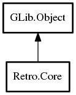

Core
Object Hierarchy:

Description:
public class Core : Object
Handles a Libretro module.
Content:
Properties:
Creation methods:
Methods:
- public void init ()
Initializes the module.
- public void deinit ()
Deinitializes the module.
- public void set_controller_port_device (uint port, DeviceType device)
Sets device to be used for player 'port'.
- public void reset ()
Resets the current game.
- public void run ()
Runs the game for one video frame.
- public size_t serialize_size ()
Returns the amount of data the implementation requires to serialize
the internal state.
- public bool serialize (out uint8[] data)
Serializes the internal state.
- public bool unserialize (uint8[] data)
Unserializes the internal state.
- public void cheat_reset ()
Resets the cheats.
- public void cheat_set (uint index, bool enabled, string code)
Sets a new cheat.
- public bool load_game (GameInfo game)
Load. a game.
- public bool load_game_special (GameType game_type, GameInfo[] info)
Loads a "special" kind of game. Should not be used except in extreme
cases.
- public void unload_game ()
Unloads a currently loaded game.
- public uint8[] get_memory (MemoryType id)
Gets a region of memory.
Signals:
Inherited Members:
All known members inherited from class GLib.Object
- @new
- newv
- new_valist
- get_type
- get_class
- @ref
- unref
- ref_sink
- weak_ref
- weak_unref
- add_weak_pointer
- remove_weak_pointer
- @get
- @set
- get_property
- set_property
- get_data
- set_data
- set_data_full
- steal_data
- get_qdata
- set_qdata
- set_qdata_full
- steal_qdata
- freeze_notify
- thaw_notify
- dispose
- constructed
- notify_property
- connect
- disconnect
- add_toggle_ref
- remove_toggle_ref
- bind_property
- notify
- ref_count